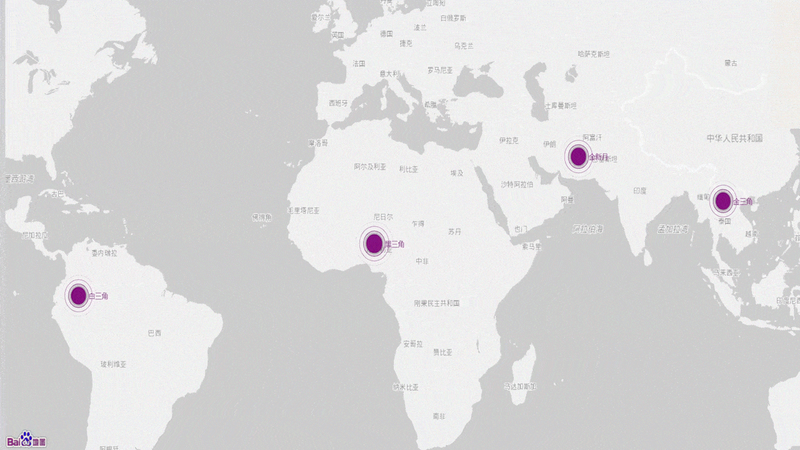
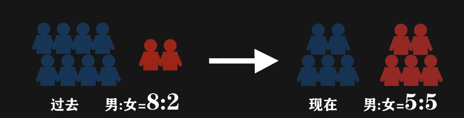

(一)毒品的常见种类
一个个五花八门的名字背后都隐藏着一个共同的名字--毒品，请擦亮你的眼睛，看清它背后的黑暗。
(二)贩毒
贩卖的不仅仅是毒品，还有一个个家庭的希望。
世界四大毒品源地

金三角：最大的鸦片产地 金新月：第二大的鸦片产地
白三角：主产可卡因和大麻 黑三角：主产大麻
（三）吸毒
莫让一时的快感成为你一生的折磨。
2014-2019年中国现有不同年龄吸毒人数和总人数趋势
男女吸毒比例

(四)毒品危害
毒品，一个吞噬着个人生命与前途，抹杀了一个文明辉煌的邪魔。它摧残着人的身躯，荼毒着人的精神，毁灭着人活着的愿望。
（五）禁毒
吸毒是绝望和死亡的代名词，别让“我以为”变成“我后悔”！